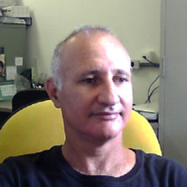

Sobre o projeto
O Portal Interativo dos Anfíbios da Floresta com Araucárias surge como um dos objetivos do Projeto Anfíbios Ameaçados da Floresta com Araucárias e Ecossistemas associados, financiado pela Fundação Araucária através da CP 11/2016, sob coordenação do Professor Dr. Rodrigo Lingnau (Universidade Tecnológica Federal do Paraná - UTFPR/ Departamento de Química e Biologia).
Temos por objetivo colaborar com a divulgação ao público geral do conhecimento existente sobre os anfíbios, particularmente sobre as espécies ameaçadas que ocorrem associadas à Floresta com Araucárias.
Como parte das nossas pesquisas, também fazemos expedições a várias regiões da Floresta com Araucárias para novos registros das espécies de anfíbios. Para algumas das espécies ameaçadas, registradas neste portal, nós já conseguimos providenciar novas informações, e com algumas medidas esperamos que em breve elas não estejam mais tão ameaçadas.
-
Pesquisador Coordenador: Prof. Dr. Rodrigo Lingnau
O Rodrigo é biólogo apaixonado por anfíbios. É casado e tem duas lindas filhas, que se impressionam com seu trabalho. Nas horas vagas gosta de assistir filmes, viajar e brincar com as filhas.
SAIBA + -
Apoio Técnico: Ma. Eloize Ferreira do Nascimento
Eloize é bióloga e, além dos anfíbios, também gosta muito de répteis. Não consegue decidir se prefere gatos ou cachorros, adora música, costura e tudo relacionado a animais, principalmente vídeos de filhotes.
SAIBA + -
Pesquisador: Prof. Dr. Luís Felipe Toledo Ramos Pereira
Felipe é biólogo e professor da Unicamp. Apaixonado por animais desde pequeno, luta pela conservação da natureza todos os dias. Nos finais de semana pega sua moto e vai pra praia!
SAIBA + -
Pesquisadora: Profa. Dra. Elaine Maria Lucas Gonsales
Elaine é bióloga e professora na UFSM. Ama a natureza e se dedica especialmente ao estudo e conservação dos anfíbios. Gosta muito de ensinar e aprender com seus alunos. O seu maior desafio é ser mãe de duas filhas lindas e talentosas.
SAIBA + -

Designer e Ilustradora: Manu Cunhas
Manu Cunhas é formada em Design Gráfico pela UDESC, onde lecionou por um certo tempo e atua como designer e ilustradora freelancer. Publicou de forma independente quatro livros e ilustrou tantos outros, recebendo o prêmio Jabuti de ilustração pelo "outras meninas".
SAIBA + -

Pesquisador: Prof. Dr. Selvino Neckel de Oliveira
Selvino estudou biologia para saber mais sobre os animais e a natureza que os cerca, e assim o fez como uma extensão da sua infância. Hoje é professor da UFSC, e seus alunos o acompanham em suas expedições à floresta.
SAIBA +